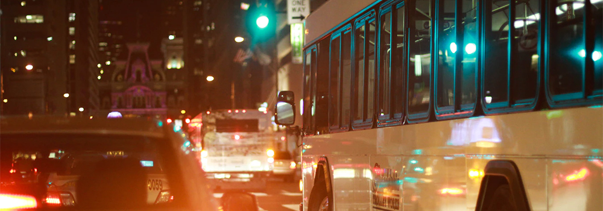

충무아트센터
오시는 길

셔틀버스 중구관내에서 4코스로 4대가 운행되고 있습니다.
월요일부터 토요일까지 운행되며 법정공휴일 및 일요일은 운행하지 않습니다.
1호차 약수역,버티고개역,남산타운아파트 방면 총 소요시간 31분
15 충무아트센터 출발
20 수정약국
22 현대문고(청소년 게임방)
24 청소년수련관 건너편
25 남산타운 36동 후문
26 파리바게트(광성교회)
27 체육상가 앞
28 4동 앞
31 버티고개역 3번 출구
45 충무아트센터 도착
2호차 퇴계로,을지로,광희동,중구청 방면 총 소요시간 37분
15 충무아트센터 출발
18 을지로6가 파출소
20 중부시장 건너편
22 을지로4가 사거리
24 중구청 입구
27 동국대 후문(녹두사거리)
28 평화식당
29 행복예식장
31 쌍림빌딩
34 광희문입구
35 제일슈퍼
36 청구역 어린이놀이터앞
37 하이마트
45 충무아트센터 도착
3호차 청구역,삼성아파트,현대아파트,금호아파트 방면 총 소요시간 35분
15 충무아트센터 출발
20 청구역 1번 출구 어린이놀이터 앞
23 약수하이츠 아파트 정문
24 약수하이츠 아파트 111동
25 약수하이츠 아파트 114동(후문)
26 삼성아파트 정문
28 삼성아파트 후문
30 현대아파트 정문 앞(새마을 금고길 건너)
31 현대아파트 후문
32 금호아파트 입구
33 신당초등학교 정문
35 황학시장(창성종합주방 앞)
45충무아트센터 도착
4호차 장충동,성곽길,대림아파트 방면 총 소요시간 35분
15 충무아트센터 출발
20 엠버서더호텔 옆 정자앞
23 성곽길 입구
24 중현슈퍼
25 충현상회
26 성곽공영주차장 앞
28 버티공영주차장 앞(덕성슈퍼마켓)
30 송도병원
31 약수역기업은행(약수역 6~7번사이)
32 대림 e-편한세상 아파트 정문
33 대림 e-편한세상 아파트 새마을금고
45충무아트센터 도착
셔틀버스 운행시간
- 첫차: 오전 8시 15분
- 막차: 오후 6시 15분
-
차량 도착시간은 신호등 정차, 교통상황에 따라 다소 차이가 있을 수 있습니다.
차량도착 전 반드시 손을 들어 정차표시를 해주시기 바랍니다. -
셔틀버스는 중구시설 관리공단에서 운영하고 있습니다.
노선 또는 배차와 관련한 상세한 문의는 중구시설관리공단 홈페이지나 스포츠 센터(02-2280-8400~3)로 문의하시면 됩니다.